§1. Перша програма на PHP
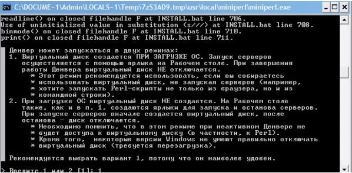


Почнемо з програми. Завдання програми полягатиме в тому, щоб вона віталася з нами. За допомогою текстового редактора створюємо файл, наприклад, test.php. У ньому пишемо наступний код:
<?php
echo"<html><body>";
$my_name = "Саша";
echo "Привіт".my_name;
echo"<html><body>";
?>Тепер розглянемо цей код. Він розміщується в спеціальних тегах PHP – <?php і ?>. Далі ми бачимо оператор echo, який здійснює виведення інформації в браузер. Думаю, Ви вже знайомі з HTML тегами – <html> і <body>, саме їх виводить оператор echo на початку і в кінці сценарію. $my_name – це змінна. Судити про те , що це змінна ми можемо зі знака долара $ , який ставиться перед іменами всіх змінних.
Даній змінній за допомогою оператора присвоювання «=» присвоюється значення “Саша”, замість нього Ви вписуєте в сценарій своє ім’я. Наступний оператор echo виводить привітання – “Привіт” і значення нашої змінної. Між ними стоїть крапка «.», цей оператор означає операцію конкатанції (складання рядків). У даному випадку ми склали в один два рядки: рядок “Привіт” та рядок “Значення нашої змінної”.
Тепер зберігаємо цей файл на локальному сервері, запускаємо його за допомогою браузера і дивимося на результат. Я використовую сервер Denwer. Про те, як встановити безкоштовний локальний сервер Denwer і як правильно зберегти наш файл test.php читаємо тут.
Однією з відмінностей PHP від інших мов веб-програмування є можливість інтегрувати код в звичайний HTML. Але для того щоб PHP інтерпретатор зміг відрізнити PHP код від HTML-розмітки треба використовувати спеціальні теги, найбільш часто в даній мові веб-програмування використовуються 4 види таких тегів:
– Короткі теги
– Повні теги
– Теги скрипт
– Теги в стилі ASP
Короткі теги в першу чергу зручні своею стислістю при переході в PHP. Вони мають наступний вигляд:
<?
?>Приклад:
<? $name="Саша"?>
<p>Мене звати <?=name?>Але короткий запис не завжди є кращим варіантом, оскільки на сервері може бути вимкнена підтримка коротких тегів, тоді треба редагувати файл php.ini (знайти параметр short_open_tag і встановити значення на on) або ж вказати параметри конфігурації при компіляції PHP (необхідно вказати ключ enable-short-tags).
Найбільш часто програмісти використовують повні або стандартні теги, так як вони не вимагають додаткових налаштувань, однозначно вказують на мову веб-програмування і саме вони використовуються в коді XHTML. Синтаксис:
<?php
?>При використанні цих тегів попередній приклад буде виглядати наступним чином:
<p>Мене звати
<?php
$name="Саша";
print $name;
?>Досить рідко PHP-програмісти використовують теги в стилі ASP:
<%
%>
Вони, як і короткі теги швидко виводять значення змінних PHP в тексті документа HTML. Аналогічно в php.ini потрібно включити (повинен мати значення on) параметр asp_tags.
Останнім варіантом тегів оформлення переходу є теги типу скриптової мови JavaScript, вони мають наступний синтаксис:
<script language="php"></script>PHP-вираз – це набір елементів мови, що описує певну дію. Всі вирази на PHP розділяються крапкою з комою “;”, а завершуються закриваючим тегом ?>. Крапка з комою і закриваючий тег називають термінаторами (що в перекладі з англійської означає – завершувати). Порівняємо 2 коди:
<?php
print "Hello"
?><?php
print "Hello";
?>Результат виконання буде однаковим, але якщо в другому прикладі дописати після echo“Hello” ще один вираз, то отримаємо помилку. Тому бажано ставити крапку з комою в кінці кожного виразу, хоча це і не завжди необхідно.
Майже всі програмісти при написанні коду використовують коментарі, це робиться для того, щоб потім було легше розбиратися в складному коді. У PHP використовують 3 типи коментарів. Розглянемо їх на прикладах:
#Це однорядковий коментар
//Це теж однорядковий коментар
/* А це вже
довгий багатостроковий
коментар
*/
§2. Установка локального сервера Денвер
Для чого потрібен Денвер?
Коли ми пишемо сайти на php або php скрипти у нас з’являється необхідність перевірки коду, а для цього потрібно завантажувати дані файли на хостинг. Завантаження файлів ускладнює нашу роботу, уповільнює її. Для того щоб полегшити роботу з кодом і існує Денвер, набір дистрибутивів, за допомогою якого можна працювати з сайтами на PHP і Базами Даних на ПК, не підключеними до Інтернету. Приступаємо до установки Денвера.
1. Для початку потрібно завантажити з офіційного сайту дистрибутив Денвер, в нього крім локального сервера також входять: PHP, Apache, MySQL, Perl і т.д., натискаємо завантажити:
2. Заповнюємо спеціальну форму для отримання на e-mail посилання на скачування Денвера: 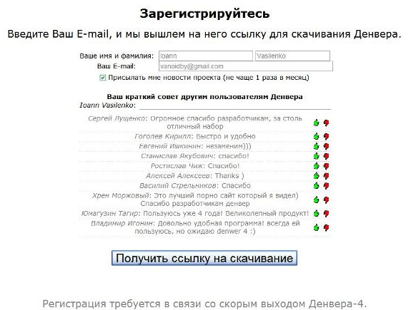
3. Заходимо на зазначену Вами у формі пошту, відкриваємо отриманий лист, натискаємо на посилання, завантажуємо Денвер:
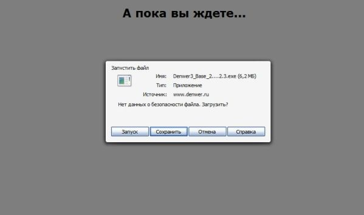
4. Запускаємо інсталяційний файл *.Exe, натискаємо на «так» у вікні інсталяції:
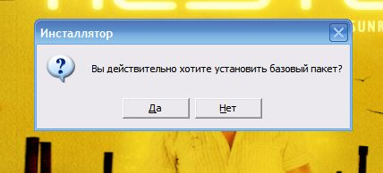
5. Після того, як файли розпакуються, Вас привітає програма установки Denwer і попросить для продовження натиснути кнопку “ENTER”:
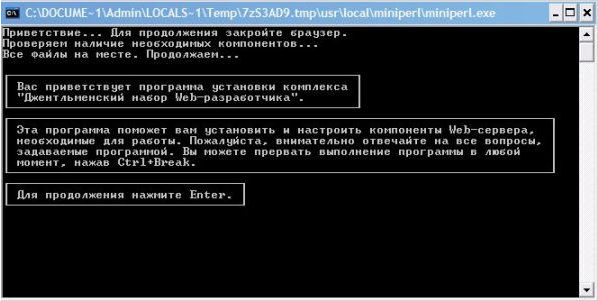
6. У наступному вікні ми вибираємо, куди встановлюємо Денвер – на флешку або на комп’ютер, ми установлюємо на ПК, тому тиснемо “ENTER”:
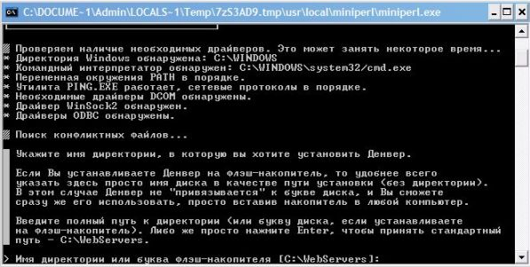
7. Тепер програма установки запитає нас, чи встановлюємо Денвер на диск C:/WebServers (y/n)? Пишемо букву y (так), нажимаємо “Enter”.
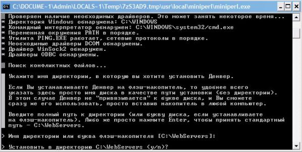
8. Читаємо, що таке віртуальний диск і знову тиснемо “Enter”:
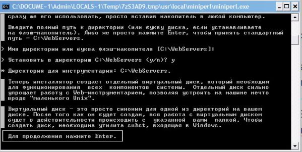
9. Вибираємо букву віртуального диска, можна залишити Z, тиснемо “Enter”, файли локально сервера Денвер будуть скопійовані на Ваш комп’ютер:
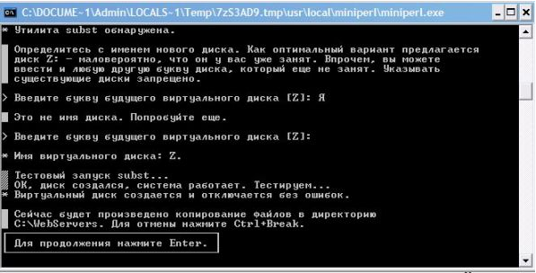
10. Тепер нам потрібно вибрати режим роботи віртуально сервера, вибираємо «1» тиснемо «ENTER»:
11. Далі програма запитує, чи створювати на робочому столі ярлики? Натискаємо на «y» і «Enter»:
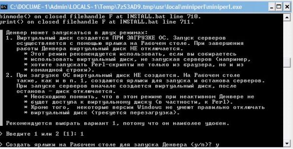
12. Все, ми встановили Денвер, на робочому столі повинні з’явитися 3 ярлика: «Start Denwer» – запуск Денвера, «Restart Denwer» – перезапуск і «Stop Denwer» – зупинка.
Важливо! Якщо у Вас є програма Skype, обов’язково перевірте, чи не займає вона порти 80 і 443, так як вони необхідні для коректної роботи Apache (Інструменти – Налаштування – Додатково – З’єднання) Галочок не повинно бути біля «Використовувати порти 80 і 443 як вхідні альтернативні».
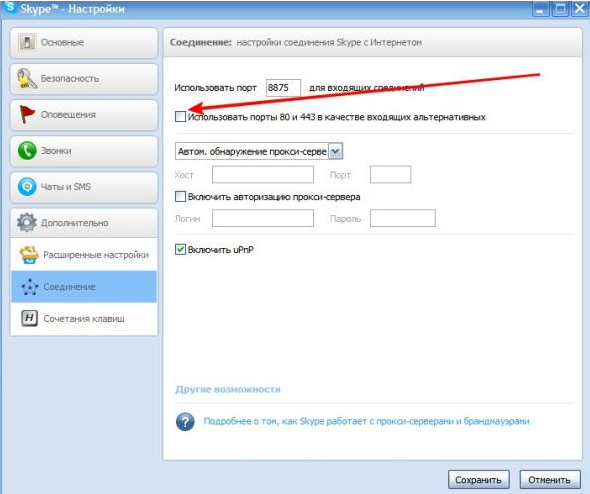
13. Тепер запускаємо Денвер за допомогою ярлика запуску, пишемо в адресний рядок: http://localhost/ Якщо все було зроблено правильно, бачимо наступне:
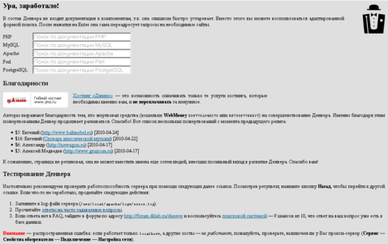
Тепер визначимо, яким чином нам зберегти файл test.php на локальному сервері? Заходимо Мій комп’ютер – Локальний диск (Z:) (тут вибираємо назву диска, який ми створили при установці Денвера, за замовчуванням Z:) – Home. У папці Home створюємо папку з назвою бажаного домена, наприклад – domen.ru.
У папці domen.ru створюємо папку www, і вже в неї поміщаємо файл test.php. Після цього обов’язково перезавантажуємо Денвер. Тепер наш файл доступний в браузері за адресою – domen.ru/test.php. Аналогічним чином створюються і розміщуються інші файли сайту. Ось, власне кажучи, і все. Удачі!
§3. Типи даних в php: дійсні, цілі числа, рядки, масиви, об’єкти, логічні величини
У цьому уроці ми ближче познайомимося з типами даних і змінними в PHP. Це потрібно для того, щоб ми змогли краще зрозуміти сценарій, наведений в попередньому уроці, дізнатися, що і як працює, яким чином модифікувати код.
Тепер поговоримо про типи даних в php. Мови програмування можна розділити на дві групи: мови з динамічною типізацією і мови зі статичною типізацією. PHP належить до першої групи, тобто це мова з динамічною типизацією. Це означає те, що в php існують різні типи даних:
– Дійсні числа (real);
– Цілі числа (integer);
– Рядки (string);
– Масиви (array);
– Об’єкти (object);
– Логічні величини (boolean).
1. Дійсні числа (real);
Дійсні числа – це числа, в яких є дробова частина (їх також називають числами з плаваючою крапкою). Навіщо використовувати дійсні числа в PHP? Справа в тому, що цілі числа не завжди підходять для розрахунків. Іноді, нам потрібні більш точні вимірювання, наприклад, вимірювання температури або фінансові розрахунки, при яких вказуються дробові частини. Зверніть увагу на те, що для відділення дробової частини від цілої в php слід використовувати крапку, а не кому!
Приклади:
1.245
156.12
2. Цілі числа (integer);
Ціле число – це послідовність з однієї або декількох цифр без дробової частини. Запис цілого числа в PHP може бути різним:
Звичайна десяткова система числення –
9
Шістнадцяткова система (коли число починається з 0x) – 0x1A
Вісімкова система ( число починається з 0) –
0123
Цілі числа в php можуть бути як додатніми так і відємними, залежно від того який знак – «плюс» чи «мінус» стоїть перед ними.
3. Рядки (string);
Що таке рядок в php? Це послідовний набір символів, який є одним цілим, але при цьому є доступ до символів, що входять в цей набір. Рядки в php, як правило, не використовують для обчислень, а служать для передачі смислового навантаження. Ось декілька прикладів рядків:
– Hello
– Приклад
– 90 crossroads
– &/#@^^
При програмуванні на php всі рядки можна розділити на 3 види:
1). Рядки, обрамлені одинарними лапками (апострофами);
2). Рядки, обрамлені подвійними лапками;
3). Вбудовані документи.
При використанні строкового значення в програмі, його потрібно брати в лапки, або ж використовувати синтаксис вбудованої документації. Php, як вже було сказано раніше, є мовою з динамічною типізацією. Даний тип мов програмування в свою чергу ділиться на дві групи:
– суворо типізовані (у цих мовах веб програмування суворо обмежені операції з різнотипними даними, наприклад додавання цілого числа і рядка);
– слабо типізовані (у таких мовах операції з різнотипними даними можливі).
Так от, php – це мова зі слабкою типізацією.
Наприклад, якщо взяти будь-яке число, і заключити його в лапки, то дана послідовність буде сприйнята інтерпретатором php як рядок, а не як число. Але тут слід зауважити, що при додаванні, наприклад, рядка “100” і числа 10 ми отримаємо результат – 110. Висновок наступний – php сам визначає тип даних і потім проводить відповідні операції. Цю особливість треба мати на увазі при програмуванні на php.
Зараз ми розглянемо різницю між використанням подвійних і одинарних лапок в php. Цей матеріал дуже важливий, так як неправильний вибір лапок в деяких випадках може привести до непрацездатності веб-додатка.
Всередині подвійних лапок – відбувається інтерпретація змінних, в результаті чого на виході ми отримуємо їх значення;
Усередині одинарних лапок – змінні не інтерпретуються, тобто рядок пишеться як є.
Закріпимо теорію на практиці:
$name1= “Sasha”;
$name2=’Sasha’;
echo $name1;
echo $name2;
Ми отримаємо один і той же результат – Sasha, так як у рядках немає змінних.
Розглянемо ще один приклад:
$name= “Sasha”;
$sentence1= “Його звати $name”;
$sentence2=’Його звати $name’;
echo $sentence1;
echo $sentence2;
У першому випадку ми отримуємо – Його звати Sasha, а в другому – Його звати $name.
Потрібно завжди пам’ятати це розходження, щоб уникнути помилок в коді.
Представляємо вашій увазі таблицю службових символів, які також часто використовуються в рядках крім звичайних символів:
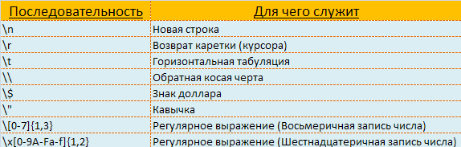
Іноді виникає ситуація, коли на екран треба вивести сам службовий символ так, щоб він не інтерпретувався. Для цього використовують операцію екранування – додавання перед символом зворотної косої лінії – \.
Приклад екранування:
<?php
$sentence="Символ перевода рядка:\\n.";
echo $sentence;
?>В результаті виконання даного php скрипта ми отримаємо наступне:
Символ перевода рядка: \n.
Як ми бачимо, одна зі зворотних косих рисок зникла, так як вона була службовим символом, який відповідав за те , щоб на екрані було видно тільки те, що задумав веб-програміст.
Аналогічним чином екрануються і інші службові символи представлені в таблиці вище.
Тепер розглянемо випадок екранування подвійних лапок, так як тут є деякі особливості.
Розглянемо ось такий скрипт:
<?php
$example="Книга називається "Бійцівський клуб", я читав її минулого року";
echo $example;
?>Даний код php викличе помилку, чому так? Справа в тому, що коли інтерпретатор обробляє цей скрипт, він вважає, що рядковий вираз закінчується після другої лапки. Після нього згідно синтаксису мови програмування php повинно йти або продовження вираження, або його обмежувач. Замість цього в коді йде слово – Бійцівський, що і змушує інтерпретатор видати помилку.
Як вирішити цю проблему? Тут є 2 варіанти:
1. Можна екранувати внутрішні лапки за допомогою зворотних косих рисок;
2. Або ж треба замінити внутрішні чи зовнішні подвійні лапки на одинарні.
Якщо Ви вибрали другий варіант, то треба бути обережними з змінними, так як вони не інтерпретуються в разі, якщо розміщені між внутрішніми подвійними лапками, які в свою чергу укладені в одинарні. Приклади:
<?php
$book= "Бійцівський клуб"
echo "Книга називається \"$book\", я читав її минулого року"<br>;
echo 'Книга називається "$book", я читав її минулого року'<br>;
echo "Книга називається '$book', я читав її минулого року"<br>;
?>В результаті виконання скрипта ми отримаємо наступний результат:
Книга називається “Бійцівський клуб”, я читав її в минулому році.
Книга називається “$book”, я читав її в минулому році.
Книга називається ‘Бійцівський клуб’, я читав її в минулому році.
Як бачимо з прикладу, найбільш підходящим варіантом у даному конкретному випадку є метод екранування внутрішніх подвійних лапок.
Третім видом строкових значень після рядків з одинарними і подвійними лапками є вбудована документація (від англ. Heredoc). Рядкове значення обмежується за допомогою символу і двох ідентифікаторів, які є довільними.
Наприклад:
<?php
$var = "Змінна";
$str = <<<BLA
Ви бачите приклад рядка з "неекранованими лапками" і
пераводом рядка.$var.
BLA;
echo $str;
?>Результат виконання скрипта:
Ви бачите приклад рядка з “неекранованими лапками” і переводом рядка. Змінна.
У прикладі були використані довільні ідентифікатори. Використовувати вбудовану документацію дуже зручно при вбудовуванні в сценарії великих шматків тексту.
4. Масиви (array);
Що таке масив в php? Масив(від англ. array) – це список елементів одного типу. У php існує 3 види масивів:
– Індексовані;
– Асоціативні;
– Змішані.
У свою чергу будь-який такий масив може бути одновимірним або багатовимірним. Для кращого розуміння поняття масиву його можна порівняти з футбольною командою, в якій є гравці (елементи), а в кожного гравця є номер(ключ) та прізвище (значення). Особливістю індексів масивів у php є те, що нумерація починається з нуля, а не з одиниці. Таким чином футбольну команду можна представити у вигляді масиву:
$player[0]= “Кріштіану Роналду”;
$player[1]= “Вієйра Марсело”;
…
Більш докладно масиви будуть розглянуті в наступних уроках.
5. Об’екти (object);
Об’єкти – це ще однин тип даних у мові програмування php. Об’єкти в php неможливо розглядати без знайомства з ООП (об’єктно-орієнтованим програмуванням). Об’єкти, як і масиви, будуть детально розглянуті в наших наступних уроках.
6. Логічні величини (boolean);
Цей тип даних по праву вважають одним з найпростіших в PHP, так як він може мати тільки одне з двох значень – або значення істина (англ. true), або брехня (англ. false). Логічні величини або як їх ще називають, булеві, можуть використовуватися двома способами – як результат логічних операцій або як значення змінних. При використанні логічних величин як змінних, ключові регістронезалежні слова TRUE і FALSE є їх значеннями. Приклад:
$example = TRUE;
В даному випадку змінна $example має значення TRUE і в той же час є істиною. У програмуванні на php дуже часто застосовують логічні операції, де використовуються логічні величини. Можливо, ви вже знайомі з умовними керуючими конструкціями, які основані на логічних величинах. Приклад:
if($ example == 10){
$ word = TRUE;
}
У чому суть цього коду? Він перевіряє, чи дорівнює змінна $example числу 10. Якщо це так, то вираз $example == 10 повертає значення TRUE, при цьому виконується код у фігурних дужках. В іншому випадку вираз повертає FALSE і як наслідок код в фігурних дужках не виконується.
Крім двох ключових слів TRUE і FALSE в мові програмування php передбачені й інші варіанти конвертації різних типів даних в логічні величини. У наступній таблиці Ви зможете ознайомитися з типами даних, значення яких інтерпретуються як FALSE або TRUE.
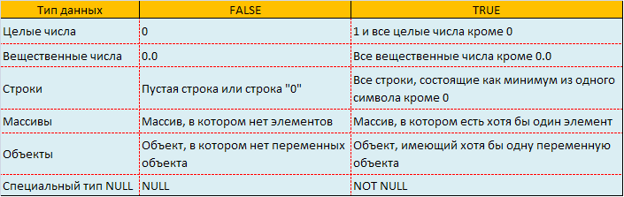
Як можна використовувати дані з таблиці?
Їх значення можна привласнювати змінним і використовувати їх в логічних операціях.
Приклад:
$example=0;
if($example) {
print "\var=TRUE";
else {
print "\var=FALSE";
}У першому рядку коду змінної $example було присвоєно значення 0. Далі скрипт перевіряє значення змінної $example і виводить рядок $example = FALSE, бо значення $example дорівнює нулю. Де тут логічна операція? Справа в тому, що вираз if($example) являє собою скорочений варіант логічної операції – if($example == TRUE).
Зверніть увагу, в прикладі є операція екранування, перед знаками долара була використана зворотна коса риска, в результаті ми вивели ім’я змінної, а не її значення.
§4. Змінні, константи і операції з ними
Що таке змінна в php? Як і в інших мовах програмування змінною називається іменована область пам’яті, в якій містяться дані, які, як правило, використовуються при виконанні програми. Змінна в php починається зі знака долара – $ і складається з цифр, букв і знака підкреслення.
Приклади різних змінних в PHP:
$word
$my_word
$word24
$ВИСОТА
$_My_Word
Є набір правил, яких потрібно дотримуватися при визначенні імен змінних:
– В ім’я змінної російські літери можуть входити як повністю, так і частково.
– Після знаку долара в імені змінної може йти тільки символ підкреслення або буква. Змінні $word і $worD будуть інтерпретуватися як 2 різні змінні, тобто змінні в php – чутливі до регістру.
– Імена змінних в php не повинні збігатися з ключовими словами цієї мови. Список ключових слів дивіться в офіційній документації PHP.
– Довжина імені змінної в php не обмежується і може бути будь-якою.
У PHP змінні рекомендується оголошувати явним чином, хоча вони і не потребують оголошення, так як ініціалізуються в момент їх першого використання в програмі. Також не треба вказувати тип змінної – real, integer, string, boolean. PHP сам здатний визначати тип змінної, який він «дізнається» виходячи з даних, які зберігаються в змінній. Ця властивість PHP є ознакою мови з динамічною типізацією.
Приклад
<?php
/*Спочатку оголошуємо змінну, хоча в прикладі в цьому немає необхідності. Зверніть увагу, ми тут непрямим чином визначаємо її тип – integer, так як в ній зберігається ціле число.*/
$number=0;
//виконуємо дію додавання
$result=$number+20;
print $result;
?>
У даному прикладі змінну $number оголошувати було не обов’язково, так як інтерпретатор в будь-якому разі самостійно присвоїв б їй значення 0. У PHP всім неініціалізованим змінним за замовчуванням присвоюються порожні значення – FALSE, список яких можна переглянути в попередньому уроці. Тип змінної в такому випадку визначається автоматично, виходячи з операції, в якій вона використовується.
Але бувають випадки, коли тип змінної потрібно вказувати безпосередньо. Також іноді треба змінити тип змінної – перетворити з одного в інший. Для цього використовуються оператори перетворення, які записуються в дужках перед змінними, вказуючи на потрібний тип змінної…
§5. Оператори, операнди і вирази в php
Будь-яка програма в PHP складається з операндів, операторів, які в свою чергу об’єднуються в вирази. Вам ці поняття, напевно будуть знайомі, якщо ви вже вивчали такі мови програмування як Java або С++. Матеріали даного невеликого уроку будуть необхідні для розуміння наступних уроків, тому приділіть йому максимум уваги.
Для кращого розуміння суті операторів, операндів і виразів проведемо аналогію з звичайною мовою, якою ми користуємося щодня. Операнд – це спеціальна величина, яка обробляється в програмі. Оператор – це певна дія, яка виконується з операндом. За аналогією з українською мовою операнд – це підмет, а оператор – присудок. Виразом тоді буде речення. Давайте розглянемо простий вираз в php і розділимо його на складові частини.
$multiply=$variable1*$variable2
У даному прикладі операндами будуть $multiply, $ ariable1 і $variable2. Вони являються підметами, якими php програміст оперує в програмі за допомогою операторів:
– Оператор множення “*”;
– Оператор присвоювання “=”.
При написанні програми вираження об’єднуються в ще більші конструкції, звані блоками. Їх об’єднують цикли і умовні конструкції, мова про які піде в наступних уроках.
§6. Умовні конструкції в php – конструкція if
Як правило, вирази в php програмі виконуються в порядку їх написання у вихідному коді. Для зміни цього порядку потрібно використовувати умовні конструкції. Така необхідність виникає перед програмістом php практично в будь-якій програмі, коли при виконанні певної умови повинен виконуватися один блок скрипта, а при виконанні іншої умови – інший. Таким чином, PHP сценарії – дуже гнучкі і можуть залежати від безлічі умов.
Основою роботи всіх конструкцій є перевірка умов на істинність або хибність. Залежно від результату такої перевірки інтерпретується той чи інший блок php скрипта. Давайте розглянемо наступний приклад:
$color=«Червоний»
Якщо змінна $color буде мати значення «Червоний», то вираз – істинний, в іншому ж випадку він – помилковий. Результатом такого виразу можуть бути TRUE або FALSE відповідно. У мові PHP є 2 основні умовні конструкції: if і switch. Хоча у них і однакові завдання, кожна використовується зазвичай в окремих випадках.
Конструкція if
У мові PHP є кілька способів запису конструкції if. У самому простому if перевіряє хибність або істинність певної умови і залежно від результату перевірки виконує або не виконує групу виразів, розміщених у фігурних дужках.
У даному випадку конструкція if буде мати наступний формат запису:
<?php
if(якась умова){
Блок виразів
}
?>
Код в фігурних дужках буде виконуватися, якщо умова істинна. В іншому випадку блок виразів буде просто пропущений.
Розглянемо приклад:
<?php
$b=5;
if($b<10){
echo $b . «менша десяти»;
}
?>
У цьому прикладі змінній $b присвоюється значення 5. Потім виконується порівняння 5<10. Як ми бачимо, воно - істинне, тому код у фігурних дужках буде виконуватися. У результаті на екран буде виведена фраза 5 менше десяти. Наведений вище спосіб запису може бути трохи ускладнений за допомогою команди else. Синтаксис розширеного формату наступний:
<?php
if(якась умова){
Блок виразів
}
else{
Інший блок виразів
}
?>
Якщо умови в if – істинні , тоді буде виконуватися перший блок виразів, якщо помилкові – другий блок.
На цьому можливості if не закінчуються. У скрипт можна додавати будь-яку кількість додаткових перевірок. Для цього використовується команда elseif. Тоді спосіб запису повної форми if може бути, наприклад, таким:
<?php
if(якась умова){
Блок виразів 1
}
elseif{
Альтернативний блок виразів 2
}
else{
Альтернативний блок виразів 3
}
?>
В теорії кількість блоків elseif не обмежується, проте не потрібно захоплюватися їх створенням. Для закріплення матеріалів уроку про конструкції if розглянемо ще один приклад:
<?php
if (!$_POST[“submitt”]){
echo “<form action=’’ method=’POST’>
<h3>Вкажіть число:</h3>
<input type=’text’ name=’digit’>
<input type=’submit’ name=’submitt’ value=’ok’>
</form>”;
}
else{
$digit=$_POST[“digit”];
if ($digit<0){
echo “Дане число менше нуля”;
}
elseif ($digit>=0){
echo “Це число більше чи дорівнює нулю”;
}
else{
echo “Це не число”;
}
}
?>
У цьому прикладі на екран виводиться форма для введення будь-якого числа. Після відправки введені дані перевіряються і, залежно від результату, виводиться те або інше повідомлення. Зверніть увагу! За логікою, якщо замість числа ввести, наприклад, звичайний рядок – «hello», то на екрані має з’явитися “Це не число”. Але насправді буде виконуватися умова $digit>=0, так як мова php автоматично перетворює типи даних, а в даному випадку рядок буде дорівнювати 0.
§7. Додатково про умовні вирази
Конструкція if, як і будь-яка інша умовна конструкція, використовує умовні вирази, наприклад $chislo>=0. Цей вираз істина, якщо змінна $chislo більша або дорівнює нулю. Запитайте будь-яку людину, далеку від програмування, що вийде в результаті виконання виразу 5*5=25. Вона, швидше за все, не дасть вірної відповіді, в той час як будь-який програміст скаже, що значенням цього виразу буде TRUE.
Операнди можна зіставляти не тільки на рівність, а й навпаки – на нерівність. Для цього використовують оператор !(not). Наприклад:
<?php
$b=20;
if($b!=20){
echo ‘змінна $b не дорівнює 20’;
}
?>Наступний запис використовується для перевірки існування тієї чи іншої змінної:
<?php
if(!$b){
echo 'Змінної $b не існує';
}
?>Але, слід зауважити, що для перевірки існування змінних краще використовувати вбудовану функцію php issset(). Синтаксис функції:
boolisset (mixed $b)
Ця функція визначає, чи існує змінна $b. Якщо така змінна є, то isset() виведе значення TRUE, якщо ні – FALSE. Нижче можна подивитися приклад використання функції isset().
<?php
if(isset($b)){
echo‘Така змінна існує’;
}
else{
echo‘Такої змінної не існує’;
}
?>Функція empty() використовується для того, щоб дізнатися, чи порожнє значення змінної. Іноді змінна в php скрипті може бути встановлена ??і функція isset() поверне TRUE, але значення змінної буде порожнім. Функція empty() використовується для додаткової перевірки. Формат запису:
boolempty(mixed $b)
Приклад:
<?php
$b=“”;
if(!empty($b)){
echo ‘Значення змінної $b не є пустим’;
}
?>Увага! У даному умовному виразі ми використовували оператор !.
У PHP також можна об’єднувати умовні вирази в межах однієї конструкції. Умовні вирази можна застосовувати для перевірки на максимум 2 відповідності (наприклад, правий операнд менший або дорівнює лівому). Але на практиці досить часто потрібно перевірити операнди на кілька відповідностей. Наприклад, дізнатися, чи входить число в діапазон чисел від 20 до 100.
Для таких цілей використовують оператори OR , AND і XOR. З їх допомогою умовні вирази можна комбінувати. Давайте розглянемо кожен з них докладно:
Оператор OR повертає значення TRUE, якщо вираз зліва чи справа є істинним.
Оператор AND повертає значення TRUE, якщо істинними одночасно будуть обидва вирази – зліва і справа.
Оператор XOR повертає значення TRUE, якщо істинним є тільки один вираз (ліворуч або праворуч).
Приклад з оператором OR:
<?php
$login= “alex”;
//Тепер перевірим, чи співпадає $login з одним із заданих логінів
if($login==“alex” OR $login==“dmitriy”){
echo ‘Логін правильний’;
}
else{
echo ‘Ви ввели неправильний логін’;
}
?>У даному прикладі оператор OR використовується для перевірки рядка (логін) на збіг з одним з 2 рядків. Вираз поверне TRUE, якщо буде хоча б один збіг.
Приклад з оператором AND:
<?php
$b=15;
//Перевіряєм, чи входить змінна $b в діапазон 10 < $b < 100
if ($b > 10 AND $b < 100) {
echo‘$b входить в діапазон’;
}
?>У цьому прикладі вираз поверне значення TRUE тільки в тому випадку, якщо змінна $b одночасно буде більше десяти і менше 100.
Приклад з оператором XOR:
Застосування аналогічне опереатору OR, відрізняється тільки результат порівняння. Оператор XOR зазвичай використовують у складних умовних виразах. Давайте розглянемо приклад:
<?php
$b=10;
//Умова для отримання значения TRUE:
//$b має бути більше 5 і менше 50,
//чи більше 0 і менше 100
if (($b>5 AND $b<50) XOR ($b>0 AND $b<100)) {
echo “Умова виконується”;
}
else{
echo “Умова не виконується”;
}
?>У цьому прикладі за допомогою оперетор XOR порівнюються 2 вирази: лівий ($b>5 AND $b<50) та правий ($b>0 AND $b<100). Якщо $b=10, то обидва вирази повернуть TRUE, що звичайно ж не підійде для оператора XOR, а це означає, що вся комбінація поверне FALSE. Якщо змінити значення $b на 90, то лівий вираз поверне FALSE, правий - TRUE, а ввесь умовний вираз так само TRUE. Для управління порядком порівняння умовних виразів, як ви можливо помітили в прикладі, їх потрібно брати в круглі дужки.
§8. Умовна конструкція switch()
Конструкція switch() дуже схожа на повний запис if, в якому є 1 або декілька elseif. Основне завдання даної конструкції – перевірка різних збігів. Конструкцію switch(), як правило, застосовують у випадках, коли змінна може мати різні значення і необхідно виконати певні дії в залежності від даних значень. Нижче представлений синтаксис запису конструкції switch():
switch(вираз){
case(умова):
//блок виразів
…
default:
//блок виразів
}Результат виразу порівнюється з умовами в круглих дужках після case. Блок виразів виконується, якщо результат відповідає умові, в іншому випадку – перевіряється наступна умова. Якщо умови закінчилися і жодна з них не підійшла, виконується частина коду default. У команді switch() у блока default таке ж призначення, як і в else в умовній конструкції if. Обидві конструкції дуже схожі. Приклад:
<?php
switch($b){
case(4):
echo ‘$b=4’;
break;
case(5):
echo ‘$b=5’;
break;
default:
echo ‘$b!=4’;
}
?>Аналогічний код:
<?php
if($b==4){
echo ‘$b=4’;
}
elseif($b==5){
echo ‘$b=5’;
}
else{
echo ‘$b!=4’;
}
?>Для запобігання подальшої перевірки умов і виходу зі switch() застосовують команду break.
Використовуючи конструкцію switch() можна зробити невеликий сайт в одному РНР-файлі, приклад можна подивитися нижче:
<?php
//Спочатку перевіряємо, чи відправлялася форма
if(isset($_GET[“straniza”])){
$straniza=addslashes($_GET[“straniza”]);
}
else{
$straniza=“”;
}
switch($straniza){
//Якщо користувач сайту вибрав розділ «Послуги»
case(“services”):
echo“<h1>Послуги</h1>”.
“<form action=‘index.php’ method=‘GET’>”.
“<select name=‘straniza’>”.
“<option value=‘about’>Про компанію</option>”.
“<option value=‘services’>Послуги</option>”.
“<option value=‘’>Головна</option>”.
“</select><input type=submit value=‘GO!’></form>”;
break;
//Якщо користувач сайту вибрав розділ "Про компанію"
case(“about”):
echo“<h1>Про компанію</h1>”.
“<form action=‘index.php’ method=‘GET’>”.
“<select name=‘straniza’>”.
“<option value=‘about’>Про компанію</option>”.
“<option value=‘services’>Послуги</option>”.
“<option value=‘’>Головна</option>”.
“</select><input type=submit value=‘GO!’></form>”;
break;
//За замовчуванням виводимо головну сторінку
default:
echo“<h1>Головна сторінка</h1>”.
“<form action=‘index.php’ method=‘GET’>”.
“<select name=‘straniza’>”.
“<option value=‘about’>Про компанію</option>”.
“<option value=‘services’>Послуги</option>”.
“<option value=‘’>Головна</option>”.
“</select><input type=submit value=‘GO!’></form>”;
}
?>У прикладі ми писали весь html-код прямо всередині скрипта, що зазвичай не роблять в реальних РНР-додатках. Замість цього використовують команду include, яку ми розглянемо пізніше, або користуються шаблонами, які ми також будемо вивчати в наступних уроках.
§9. Циклічні конструкції: конструкція while
При створенні сайтів доводиться вирішувати завдання різної складності. Часто одну і ту ж дію потрібно повторювати декілька раз. Для цього в РНР використовують циклічні конструкції. РНР програма зазвичай виконується в порядку читання коду зліва на право і зверху вниз. У минулих уроках можна було побачити, як цей порядок змінюється при використанні умовних конструкцій. Але навіть у цьому випадку програма виконується у напрямку до кінця скрипта.
Цикли змушують інтерпретатор виконувати багаторазові ітерації, тобто блок команд виконується кілька разів. У мові програмування php існує кілька способів запису циклічних конструкцій:
1. while
2. for
3. do… while
4. foreach
Циклічну конструкцію while використовують для багаторазового виконання блоку команд. Як правило, застосовують у випадках, коли кількість повторень невідомо заздалегідь. Ітерація буде виконуватися до тих пір, поки умова циклу дорівнює true.
Синтаксис циклу while :
while (певний вираз){
//блок команд
}Приклад цикла while:
<?php
//Присвоюємо змінній початкове значення
$begin=0;
//Встановлюємо кінцеве значення
$end=9;
//Починаєм цикл з умовою
while ($begin<=$end){
//Визначаємо номер ітерації
$iteration = $ begin + 1;
echo “$iteration –а ітерація<br />”;
//Зверніть увагу!!! Тут ми збільшуємо значення $begin!
$begin++;
}
?>Даний скрипт виводить номера повторень циклу. Відлік починається зі значення $begin, яке встановлюється на самому початку. Потім змінна $end визначає номер останньої ітерації, на якій цикл зупиняється.
У більшості мов програмування, в тому числі і в РНР, відлік починається не зі звичної для нас одиниці, а з нуля. Таким чином, якщо ми рахуємо від 0 до 9, вийде рівно 10 ітерацій циклу. Зверніть увагу на цю особливість. Ви повинні звикнути до таких нюансів програмування, щоб уникнути помилок при написанні додатків на РНР.
У прикладі вище цикл виконується до тих пір, поки змінна $begin дорівнює або менша $end. Між фігурними дужками циклу (цю область ще називають тілом циклу) присутній оператор інкремента $begin++. Завдяки йому значення $begin при кожному повторенні циклу збільшується на 1. Номер ітерації для відображення на екрані формується у виразі $iteration = $begin + 1.Якщо програмісту звично те, що відлік починається з 0, то простий відвідувач веб-сайту може цього не розуміти. Ми присвоюємо $iteration суму $begin та одиниці для того, щоб привести номера ітерації до звичного людського вигляду. У результаті ми побачимо на екрані наступне:
1 –а ітерація
2 –а ітерація
3 –а ітерація
4 –а ітерація
5 –а ітерація
6 –а ітерація
7 –а ітерація
8 –а ітерація
9 –а ітерація
10 –а ітерація
Коли $begin стає більше 9, цикл зупиняється, а управління переходить далі.
§10. Цикл for
На відміну від циклу while цикл for в основному використовують для виразів із заздалегідь відомою кількістю повторень. Але у while ця конструкція відрізняється тим, що умова змінюється в самій конструкції, а не зовні або всередині блоку скрипта.
Синтаксис циклу for:
for (ініціалізація; умова; прирощення){
//блок команд
}Цикл for відрізняється ще й тим, що умова включає не тільки саму умову виконання циклу, а й ініціалізаційну частину і прирощення. У ініціалізаційній частині встановлюються початкові значення потрібних змінних. Дана частина виконується під час першої ітерації. Прирощення виконується при кожному повторенні і, як правило, використовується для декремента або інкремента значення однієї або декількох змінних.
Приклад використання циклу for :
<?php
for ($begin=0, $end=9; $begin<=$end;$begin++){
//Присвоюєм номер ітерації
$iteration=$begin+1;
echo “$iteration –а ітерація<br />”;
}
?>Як ми бачимо, цей скрипт – більш компактний, ніж код з циклом while в попередньому уроці. Але, як показує практика, для деяких людей він здається більш складним для запам’ятовування і розуміння.
Під час першого проходу даної циклічної конструкції ініціалізуються змінні $begin і $end: вони отримують значення 0 і 9. Потім інтерпретатор перевіряє істинність умови циклу. Звичайно ж, 0<9, тому блок коду всередині циклу for виконується, а $ begin збільшується на 1. Потім умова циклу перевіряється знову. Цього разу змінна $begin=1, що менше 9, тому цикл продовжує виконуватися. Коли значення $begin=10, умова $begin<=$end стає хибною - false і цикл закінчується. Зазначений вище синтаксис запису циклу for не є обов'язковим. Допускається винесення частини ініціалізації за межі циклу, а прирощення і контроль виконання умов можна розміщати всередині. Приклад робочого скрипта:
<?php
$begin=0;
$end=9;
for (;$begin<=$end;){
//Визначаємо номер ітерації
$iteration=$begin+1;
echo “$iteration –а ітерація<br />”;
$begin++;
}
?>Даний скрипт практично ідентичний коду конструкції while в попередньому уроці. Цикл for в порівнянні з іншими циклічними конструкціями вважають більш наочним, так як кодер відразу отримує всю необхідну інформацію про роботу циклу.
§11. Цикл do…while в php
Циклічна конструкція do … while дуже схожа на цикл while. Відрізняється від нього тим, що умова перевіряється не на початку, а в кінці виконання кожного проходу тіла циклу. Таким чином, завжди існує 1 обов’язкова ітерація.
Синтаксис запису циклічної конструкції do… while:
do{
//Блок команд
}
while(умова);Давайте детально розглянемо особливості даної конструкції на прикладі:
<?php
$begin=0;
$end=10;
do{
echo $begin;
}
while($begin>=$end);
?>Так як вираз 0>=10 є хибним, умова циклу має повернути значення false. Однак, як було відмічено раніше, одна ітерація даного циклу виконується завжди. Тому на екрані в результаті виконання скрипта з’явиться значення змінної $begin, а саме – 0.
§12. Дострокове переривання ітерацій
Часто перед php програмістом постає завдання достроково перервати поточну ітерацію. Це може бути потрібно для того, щоб вийти з циклу, або щоб пропустити ітерацію. У таких випадках у мові php використовуються команди continue і break.
Команда break застосовується для переривання виконання конструкції, в якій вона розміщена. Використовується не тільки в циклах, а й в умовній конструкції switch(). Як тільки інтерпретатор всередині циклу зустрічає конструкцію break, виконання циклу зупиняється і негайно відбувається вихід.
Загальний синтаксис конструкції break :
break nДе n – кількість конструкцій, з яких потрібно вийти. Якщо застосовуються вкладені цикли, то вказують команду break 2 і відбувається вихід одразу з 2 циклів. За замовчуванням n = 1, тому для переривання одного циклу немає потреби писати break 1, потрібно записати просто break. В уроці по конструкції switch() ми вже розглядали приклад використання команди break. Тепер давайте розглянемо роботу break у циклі while.
У прикладі нижче реалізоване завдання вгадування секретного числа. Є секретне число, значенням якого є число від 0 до 10. У циклі потрібно перебрати числа, порівняти їх з секретним числом. Якщо є збіг, то слід вийти з циклу і повідомити про знайдене число.
<?php
//Задаєм секретне число
$number=5;
//Номер першої ітерації (повторення)
$i=0;
//Наш цикл
while($i<=10){
if($i=$number){
$rezultat=“Наше секретне число - $i”;
break;
}
else{
$rezultat= “Число не було знайдене”;
}
//Важливо не забувати про прирощення
$i++;
}
echo $rezultat;
?>У результаті роботи цього php скрипта ми побачимо на екрані:
«Наше секретне число – 5»
Якщо в цьому прикладі забрати команду break, то секретне число все одно буде знайдене. Але робота циклу while на цьому не перерветься і в наступній ітерації значення $rezultat буде затерто значенням «Число не було знайдене».
Якщо є необхідність завершення поточної ітерації (при цьому вихід з усього циклу не потрібен), а потім потрібно перейти до наступної, то слід використовувати команду continue.
Синтаксис запису continue:
continue nКоманда continue використовується для того, щоб пропустити всі наступні в тілі циклу оператори та початку нової ітерації. Значення n вказує на кількість ітерацій, які потрібно пропустити. За замовчуванням n = 1.
Тепер давайте на практиці розглянемо приклад використання команди continue. Наприклад, нам потрібно вивести в браузері парні числа від 1 до 100, а також вивести їх загальну кількість. Приклад вирішення даної задачі:
<?php
for ($i=1,$count=0; $i<=100; $i++){
if ($i%2){
continue;
}
echo $i.“<br />”;
$count++;
}
echo $count;
?>У умові циклу даного скрипта перебираються всі цілі числа від 1 до 100. Потім перевіряється – чи можна поділити без залишку поточне число на два. Якщо не можна, то число – непарне і вираз $i%2 поверне одиницю, що значить true, а якщо можна, то число – парне. Зверніть увагу, оператор % знаходить залишок від ділення лівої частини виразу (у нашому випадку $i) на праву частину (2).
Команда continue застосовується, якщо число непарне, при цьому інші вирази пропускаються і починається нова ітерація. Якщо число – парне, воно виведеться на екран і спрацює інкремент для $count. В результаті до кінця виконання всіх ітерацій в змінній $count накопичиться загальна кількість всіх парних чисел в заданому діапазоні.
§13. Підключення зовнішнього коду
Як і інші мови веб-програмування РНР має корисну властивість включення зовнішніх файлів. Наприклад, в окремий файл можна винести конфігураційні константи і змінні, а також часто вживані функції. Це дуже зручно – якщо виникає потреба внесення будь-яких змін, то їх можна зробити в одному файлі. Завдяки цьому розробник економить масу часу, який він витратив би на правку різних файлів, яких стосуються ці зміни.
У мові РНР включення 1 або більше файлів виконується за допомогою команд require, require_ once, include, include_once. Зараз ми розглянемо відмінності між даними командами.
За допомогою команд можна підключати як HTML-, так і РНР-файли. Давайте розглянемо випадок, коли потрібно включити в скрипт фрагмент HTML-коду. У нас є файл index.рhр з наступним вмістом:
<html>
<head>
<title>Використання команди include</title>
</head>
<body>
<?php
include “content.html”;
?>
</body>
</html>Також є файл content.html:
<h1>Фрагмент тексту з файла content.html</h1>Фрагмент коду у файлі content.html буде включений в скрипт index.php завдяки команді include «content.html». У файлах, що підключаються, розширення може бути різним. Якщо ми підключаємо рhр-код, а не html-текст, то файл, який підключається, має заключатися в php теги – <?php і ?>. Як приклад в скрипт index.рhр ми включимо вміст файлу config.php. Вміст двох файлів можна побачити нижче:
Файл index.рhр:
<html>
<head>
<title>Використання команди require</title>
</head>
<body>
<?php
require “config.php”;
echo $password;
?>
</body>
</html>Файл config.php:
<?php
$password=“Fh51kDsa56”;
?>Всі чотири команди підключення файлів в сценарії більш детально будуть розглянуті в наступному уроці.
§14. Команди підключення файлів: require, require_ once, include, include_once
Команда include
Синтаксис запису:
include "шлях/до файлу"Дана команда включає в сценарій код з файлу, який знаходиться по вказаному шляху. Якщо у файлі є помилки, то php проінформує про них і продовжить виконувати іншу частину скрипта.
Як вже було зазначено в попередньому уроці, включеним файлам можна присвоювати будь-які розширення: .php, .html, .inc. Зверніть увагу, якщо веб-сервер не може дізнатися тип файлу, то він запропонує користувачеві завантажити його. Це ризиковано, тому що в ньому можуть виявитися, наприклад, ваш логін і пароль для доступу до БД. Тому всім файлам ми рекомендуємо привласнювати стандартні розширення: .html або .php. Для того щоб зробити файли впізнаваними, називайте їх за наступною схемою: file.inc.php.
Команда require
Синтаксис запису:
require "шлях/до файлу"Команда require відрізняється від include тим, що якщо в файлі буде виявлена ??помилка, обробка сценарію буде зупинена.
Команда include_once
Синтаксис запису:
include_once "шлях/до файлу"Дана команда за своїми властивостями дуже схожа на include, але при її використанні файл може бути вкючений в сценарій тільки 1 раз. Include_once, як правило, використовують у складних додатках, де застосовується велика кількість файлів з ??перехресними включеннями і в яких складно відстежувати кількість включень файлів.
Команда require_once
Синтаксис запису:
require _once "шлях/до файлу"За своїми властивостями аналогічна require, однак, як і include_once, гарантує, що файл буде включений в сценарій тільки 1 раз.
В уроках по функціях ми також розглянемо способи формування бібліотек функцій за допомогою цих 4 команд.
§15. Масиви в php
У мові php, як і в інших мовах веб-програмування, масиви призначені для зберігання даних. У попередніх уроках ми вже згадували про масиви, тепер давайте розглянемо їх більш докладно.
У наступних уроках ми докладно вивчимо масиви, їх основні види і прийоми роботи. В уроках по масивах ми торкнемося наступних питань:
1 . Що таке масив (визначення).
2 . Як створювати масиви.
3 . Індексні і асоціативні масиви.
4 . Поняття одновимірних і багатовимірних масивів.
5 . Методи перебору елементів масивів.
Що таке масив?
Масив в php – це структурно організована сукупність елементів пам’яті, що зберігають дані під одним ім’ям. Масиви є досить гнучким і багатоцільовим типом даних. Вони можуть включати елементи будь-яких інших типів даних в т.ч. інші масиви.
У той час як змінна може містити в один момент часу тільки одне значення, масив може одночасно містити декілька елементів (значень). Елементи масивів ідентифікуються за допомогою індексів (ключів). Індекс в масивах – це спеціальний унікальний ідентифікатор елемента, який записується після імені масиву в квадратних дужках. Будь-який масив складається з 1 або декількох пар «ключ – значення».
Простим прикладом масиву може бути звичайне слово. Всі строкові дані в PHP можна представити у вигляді масиву. Наприклад, слово «програма» – це масив, який включає вісім елементів. Для звернення до елемента масиву потрібно вказати його індекс. У мові програмування php, як і в багатьох інших мовах, індексація починається з 0. Індекс першого елемента масиву (у нашому випадку це буква «п») буде дорівнювати нулю.
Давайте розглянемо приклад:
<?php
$ word = "програма";
echo $word[0];
/ / На екран буде виведена літера «п»
/ / В прикладі ключ елемента - 0, значення елемента - «п»
?>Індексація з нуля на перший погляд може здатися трохи незручною, однак до цього просто потрібно звикнути і з часом це буде сприйматися як цілком природне явище.
§16. Створення масивів
У мові PHP імена масивів, як і імена змінних, повинні починатися зі знака долара – «$». Створюючи ім’я масиву, необхідно дотримуватися загальних правил присвоювання ідентифікаторів в PHP.
Існує декілька способів створення (ініціалізації) масивів. Першим способом є створення елемента і присвоювання йому певного значення. Приклад:
<?php
$moy_massiv[0] = "деяке значення";
?>У цьому прикладі ініціалізується масив $moy_massiv, його елементу з індексом 0 присвоюється значення – «деяке значення».
Масив може мати декілька елементів, їх індекси не обов’язково повинні йти по порядку. Приклад:
<?php
$moy_massiv[0] = "деяке значення";
$moy_massiv[3] = "ще одне значення";
?>Даний скрипт створює масив $moy_massiv, який складається з 2 елементів.
Індекси в PHP масивах можна і не проставляти вручну. Після імені масиву потрібно ставити порожні квадратні дужки, тоді індексація буде проводиться автоматично. Приклад:
<?php
$moy_massiv[] = "10";
$moy_massiv[] = "20";
// буде створений масив з 2 елементів:
//$ moy_massiv[0] = "10";
//$ moy_massiv[1] = "20";
?>Масив можна також створити за допомогою конструкції array(). Ця конструкція дозволяє створювати порожній масив:
<?php
$moy_massiv = array();
?>Або масив з деякими елементами:
<?php
$moy_massiv = array ("10", "20");
?>Слід відзначити той факт, що в мові програмування PHP, на відміну від багатьох інших мов, при ініціалізації масивів не потрібно вказувати кількість елементів. Це спрощує роботу, але в той же час може призвести до логічних помилок, наприклад звернення до неіснуючих елементів. Щоб уникнути цього в PHP є вбудовані елементи для локалізації таких помилок. Це питання більш детально буде розглянуте в наступних уроках по php.
Також є й інші методи створення масивів, якщо Ви хочете з ними ознайомитись, зверніться до php документації – функції explode() і array_fill().
На відміну від мови C масиви в мові PHP, як і змінні, перед використанням не потребують оголошення. Однак, зазвичай створюється порожній масив і вже після цього з ним працюють. Наприклад, наступний код в PHP буде працювати без помилок:
<?php
$moy_massiv[2] = 126;
$moy_massiv[] = 127;
echo $moy_massiv[3];
?>Але краще написати так:
<?php
$moy_massiv = array();
$moy_massiv[2] = 126;
$moy_massiv[] = 127;
echo $moy_massiv[3];
?>Корисна властивість масивів в мові PHP – можливість використання змінних як індекса. Робиться це наступним чиином:
<?php
$index = 10;
//Тепер створюємо елемент з індексом 10
$moy_massiv[$index] = 125;
echo$ moy_massiv[10];
//На екрані з'явиться цифра 125
?>§17. Індексні і асоціативні масиви
У мові PHP масиви бувають не тільки з числовою індексацією (індексні масиви), але і асоціативні масиви, в яких в якоcті ключа вказують строкові дані. Такий підхід дуже зручний для програміста, так як ключ в такому випадку має смислове навантаження і служить свого роду підказкою для php кодера.
Для прикладу розглянемо наступний масив:
<?php
$menu[0] = "немирів";
$menu[1] = "тірамісу";
?>У даному прикладі іноземцю може бути важко зрозуміти, які страви входять в наш масив $menu. Тому масив краще записати таким чином:
<?php
$menu ["vodka"] = "немирів";
$menu ["dessert"] = "тірамісу";
?>Отже, асоціативний масив – це масив, в якому ключем є рядок. Ключ в асоціативному масиві потрібно обов’язково заключати в одинарні або подвійні лапки. Якщо в якості ключа використовується константа, то лапки можна опустити.
Приклад :
<?php
define("KEY", "vodka" ) ;
$menu[KEY] = "немирів";
?>Порядок створення асоціативних масивів за допомогою функції array() трохи відрізняється від оголошення індексних масивів . У той час як в індексних масивах ключ можна опускати, в асоціативних масивах потрібно обов’язково вказувати ключ і значення. Приклад асоціативного масиву з 2 елементами:
<?php
$woman = array(
“name” => “Марина”;
“surname” => “Іванова”;
);
?>Як звертатися до елементів асоціативних масивів?
<?php
//Представляємо масив
$woman = array(
“name” => “Марина”;
“surname” => “Іванова”;
);
//Тепер звертаємося до одного з елементів
echo $woman[“surname”];
//На екрані з'явиться прізвище Іванова
?>§18. Одновимірні і багатовимірні масиви
В попередніх уроках по php ми вивчали масиви з 1 індексом або, іншими словами, одним виміром. Масив у такому випадку мав дуже просту структуру: «ключ => кінцеве значення». На сьогоднішній день розробникам доводиться працювати з веб-додатками, у яких більш складна структура.
Хорошим прикладом багатовимірних даних може бути список зареєстрованих «юзерів» сайту. У масиві даних зберігається інформація не тільки про логін та пароль, а й інша приватна інформація про користувачів. Багатовимірні масиви використовуються для опису саме таких структур.
У багатовимірному масиві кожен елемент має не менше двох індексів. Це досягається за рахунок того, що в php елементом масиву може виступати будь-який тип даних, і інший масив в тому числі. Створюються свого роду «масиви масивів». Для прикладу розглянемо багатовимірний масив користувачів сайту:
<?php
$polzovateli = array (
0 => array (
“login” => “Admin”,
“paswd” => “gh360D12lJ”,
“email” => “adm@somemail.com”,
“profession” => “php programmer”
)
1 => array (
“login” => “Alex”,
“paswd” => “hd240lbDsA0”,
“email” => “alex@somemail.com”,
“profession” => “engineer”
)
2 => array (
“login” => “James”,
“paswd” => “lre54c0Sdv0f”,
“email” => “james@somemail.com”,
“profession” => “dancer”
)
);
?>Судячи з прикладу вище, багатовимірні масиви створюються таким же чином, як і одновимірні, крім використання в масиві конструкції array(). Для доступу до елементів багатовимірного масиву індекси записують відразу після попередніх в квадратних дужках. Давайте розглянемо наступний приклад:
echo $polzovateli[1][“profession”];Якщо цей скрипт додати, наприклад, до масива вище, то ми отримаємо професію користувача – engineer.
В теорії кількість рівнів вкладеності може бути будь-якою. Однак, слід зауважити, що на стандартному обладнанні PHP може впоратися не більше ніж з однією сотнею вкладених масивів, що рідко, але все ж слід враховувати php розробникам при створенні масивів. Насправді на практиці при створенні сайтів рідко використовується більше 10 рівнів вкладеності масивів, тому це обмеження практично не спостерігається.
Багатовимірні масиви поділяються на:
1. Індексні (ключами масивів виступають цілочисельні значення).
2. Асоціативні (ключами є виключно строкові дані).
3. Змішані (логічно, що тут ключами можуть бути як цілі числа, так і рядкові величини).
Як бачите, в даному уроці в прикладі розглядався змішаний багатовимірний масив.
§19. Способи перебору елементів масивів
При роботі з масивами в мові програмування php безліч завдань вирішується за допомогою перебору їх елементів. Для цього використовують розглянуті в минулих уроках циклічні конструкції (for, whilе…) або конструкцію foreach, яка була спеціально створена для роботи з масивами.
Давайте для початку розглянемо спосіб перебору масиву за допомогою циклу whilе:
<?php
$goroda = array (“Токіо”, “Пекін”, “Москва”);
$index = 0;
$elements = count ($goroda);
while ($index < $elements) {
echo $index+1 . “.” . $goroda[$index] . “<br>”;
$index++;
}
?>У результаті роботи цього скрипта ми побачимо на екрані наступну інформацію:
1 . Токіо
2 . Пекін
3 . Москва
Швидше за все в даному прикладі Ви зіткнулися з кількома незнайомими або незрозумілими моментами. Тому давайте розглянемо цей скрипт більш детально.
Спочатку створюється масив $goroda з 3 елементами:
$goroda [0] = “Токіо”,
$goroda [1] = “Пекін”,
$goroda [2] = “Москва”
Потім ініціалізуються 2 змінні: $index і $elements. Перша виступає ключем (індексом) для подальшого звернення всередині циклу до елементів масиву. Ця змінна одержала значення 0, так як індексація масивів у php починається з нуля.
Змінна $elements отримала значення, яке повернула вбудована функція count( ). Вбудована функція count() повертає кількість елементів масиву, ім’я якого задається в аргументі. У прикладі 3 елементи, тому значення $elements буде дорівнювати трьом.
Ітерація в циклі згідно з умовою виконується до тих пір, поки індекс елементів не буде дорівнювати максимальній кількості елементів у масиві (не забуваємо, що змінна $index дорівнює нулю, а не одиниці). На екран за допомогою команди echo виводиться результат операції конкатенації. Наприкінці виконується інкремент (збільшення змінної $index на одиницю). Не забувайте про цей нюанс, так як він дозволяє працювати з подальшими елементами масиву і забезпечує припинення роботи циклу, коли задана умова виконана .
Приклад виконання цієї ж задачі за допомогою циклу for:
<?php
$goroda = array (“Токіо”, “Пекін”, “Москва”);
for ($index = 0; $index < count ($goroda); $index++){
echo $index+1 . “.” . $goroda[$index] . “<br>”;
}
?>Цикли зручно використовувати для перебору індексних масивів, так як виконуються операції з цілочисельними індексами. Це завдання також можна вирішити і за допомогою конструкції foreach. Всього є 2 способи запису даної конструкції:
foreach (назва_масива as $value)
якийсь вираз;
foreach (назва as $key => $value)
якийсь вираз;Ключ елемента передається в змінну $key, значення в свою чергу присвоюється змінній $value. У той час як у першому варіанті запису доступно тільки значення елемента, у другому доступним є ще і його ключ. Приклад:
<?php
$goroda = array (“Токіо”, “Пекін”, “Москва”);
foreach ($goroda as $value){
echo $value . “<br>”;
}
?>Найчастіше конструкцію foreach в php використовують для перебору асоціативних масивів. Розглянемо наступний приклад:
<?php
$goroda = array (
“login” => “Admin”,
“paswd” => “gh360D12lJ”,
“email” => “adm@somemail.com”,
“profession” => “php programmer”
);
foreach ($goroda as $key => $value){
echo $key . “:” . $value . “<br>”;
}
?>У деяких випадках способи перебору елементів масиву комбінують. Давайте організуємо перебір елементів багатовимірного масиву:
<?php
$polzovateli = array (
0 => array (
“login” => “Admin”,
“paswd” => “gh360D12lJ”,
“email” => “adm@somemail.com”,
“profession” => “php programmer”
)
1 => array (
“login” => “Alex”,
“paswd” => “hd240lbDsA0”,
“email” => “alex@somemail.com”,
“profession” => “engineer”
)
2 => array (
“login” => “James”,
“paswd” => “lre54c0Sdv0f”,
“email” => “james@somemail.com”,
“profession” => “dancer”
)
);
echo “<table border=2>”;
echo “<tr><td>Логін</td><td>Пароль</td><td>E-mail</td><td>Професія</td></tr>”;
for ($index = 0; $index < count($polzovateli); $index++){
echo “<tr>”;
foreach ($polzovateli[$index] as $value){
echo “<td>” . $value . “</td>”;
}
echo “</tr>”;
}
echo “</table>”;
?>Даний скрипт виведе на екран у вигляді зручної таблиці масив $polzovateli. Якщо Вам необхідно переглянути структуру і значення елементів масиву без красивого виводу, то використовуйте вбудовану функцію print_r( ). У неї наступний синтаксис:
bool print_r (mixed expression[, bool return]);
Приклад використання на практиці:
print_r ($polzovateli);
Рекомендуємо самостійно поексперементувати з даною php функцією.
§20. Функції в мові php
Саме функція в php є ключем до ефективного програмування. Завдяки функціям код веб-додатків стає структурованим і придатним для багаторазового використання. У будь-якому середньому або великому проекті використовуються користувацькі php функції. Всього в php існує 2 види функцій: вбудовані і користувацькі. У наступних уроках ми розглянемо їх відмінності, а також такі питання як: що таке функція, як створити функцію, як викликати функцію, як змінній привласнити результат функції, області видимості, рекурсія, статичні змінні, вбудовані функції, створення і робота з бібліотеками функцій.
Отже, що таке функція?
Функція – це щось на зразок чорної скриньки, в яку розробник відправляє певні дані і отримує на виході потрібний результат. Такий чорний ящик можна використовувати багато разів, головне – щоб він відповідав потрібним вимогам. Функція представляє собою незалежний фрагмент скрипта, у якого унікальне ім’я, і який вирішує конкретні завдання. Поняття функції в php знаходитися дуже близько до поняття підпрограми в деяких мовах програмування.
Уявімо ситуацію, коли у нас є необхідність 10 раз здійснити однотипні обчислення. Звичайно можна 10 раз повторити в програмі код, який виконує ці обчислення, але набагато більш зручним буде виділення цього скрипта в окрему іменовану частину програми і звернення до неї при необхідності. Таким чином ми зекономимо місце, і наш час, тому що зміни в програму можна буде вносити більш оперативно.
Характерні властивості функції в php:
1. Ім’я: функціям присвоюються унікальні імена відповідно до правил іменування ідентифікаторів у мові програмування php.
2. Аргументи: це певні величини (рядки, числа…), які передаються в функції для обробки як вихідні дані. Без аргументів функції не були б такими потужними інструментами (вони працювали б тільки з фіксованими значеннями). Аргументи використовуються не у всіх функціях, деякі можуть працювати без вхідних даних.
3. Відособленість: функція в php – це чорний ящик, який існує окремо від основного скрипта і викликається в разі потреби.
4. Конкретне призначення: хорошою, як правило, є функція, яка вирішує конкретну задачу. Неефективною в більшості випадків буде функція, яка вирішує декілька завдань.
5. Повернення значення: дана властивість зустрічається не у всіх функціях. Після обробки даних функція може повернути результат, а може виконати певну дію, наприклад, вивести на екран якусь фразу.
§21. Створення функцій в php
Для визначення функції використовують ключове слово function, після якого записують її ім’я і список змінних-параметрів в дужках. Сам код функції (її тіло) заключається у фігурні дужки. Синтаксис запису функції в php наступний:
function function_name([$param[ , $param…]]){
//код функції
}Давайте тепер розглянемо приклад функції зведення числа в квадрат:
function kwadrat ($number){
$number_v_kwadrate = $number * $number;
echo $number_v_kwadrate;
}У прикладі ми створили функцію kwadrat( ), в яку передається аргумент у вигляді числа. Число може бути будь-яким, тому в функції використовується псевдонім – змінна $number, з якою і проводяться всі операції в тілі функції. Змінна $number – це параметр функції. Потрібно розуміти різницю між термінами «параметр» і «аргумент». Параметр функції – це псевдонім, який використовують всередині самої функції, а аргумент – це реальне значення, яке передається в функцію (наприклад, somemail@mail.ru або 25).
Функцію можна створювати в будь-якому місці програми. Як правило, визначення функцій записуються поруч в одній частині php скрипта, в більшості випадків на початку або в окремих файлах.
§22. Виклик php функцій
Після визначення php функція ніяк не впливає на програму, так як для цього до неї ще потрібно звернутися. Для виклику функції потрібно написати її ім’я і круглі дужки. Якщо у функції є аргументи, вони записуються в цих дужках. Розглянемо приклад визначення і виклику функциии my_cube():
<?php
//визначаємо функцію
function my_cube($number){
$rezultat = $number * $number * $number;
echo $rezultat;
}
//викликаємо функцію
my_cube(100);
?>Отже, давайте розглянемо, що саме робить дана функція і що буде після її виклику.
Функція my_cube() зводить число в куб і виводить результат на екран браузера за допомогою echo.
У нашому прикладі ми передали у функцію аргумент 100, який замінив параметр $number. Для безлічі математичних операцій в php є спеціальні вбудовані функції, які не потрібно визначати. Наприклад, квадратний корінь числа можна обчислити за допомогою вбудованої функції sqrt().
Розглянемо більш розгорнутий приклад з функцією my_cube():
<?php
//визначаємо функцію
function my_cube($number){
$rezultat = $number * $number * $number;
echo $rezultat;
}
//викликаємо функцію
//підносимо до куба число 100 і отримуємо 1000000
my_cube(100);
//тепер для перевірки результата отримуємо кубічний корінь з 1000000
echo '<br>' . pow(1000000, 1/3);
?>Як бачимо в прикладі, функція my_cube() в коді визначена, а от функція pow() – ні (вона вже вбудована в ядро ??мови php). У наступних уроках з php можна буде більш детально ознайомитися з вбудованими математичними функціями. Повну інформацію можна знайти в офіційній документації по php.
Зверніть увагу, функціям також можна задавати “параметри за замовчуванням”. Якщо, наприклад, програмісту відомо, що в більшості випадків при зверненні до функції передаватиметься аргумент 100, то його не потрібно передавати постійно. Замість цього при визначенні функції потрібно вказати параметри наступним чином:
function my_cube($number = 100) {
...
}Тепер при виклику функції my_cube() без параметрів, значення параметра $number буде за замовчуванням дорівнювати 100. Якщо ж як аргумент буде передано інше значення, то $number прийме його. Для закріплення матеріалу розглянемо приклад:
<?php
//визначаємо функцію
function age_after_five_years($age=20) {
return $age+5;
}
//викликаємо функцію
echo age_after_five_years();
//на екрані побачимо число 25
echo “<br>”;
echo age_after_five_years(30);
//на екрані побачимо число 35
?>Також потрібно запам’ятати, що параметри за замовчуванням і звичайні параметри можна поєднувати при визначенні 1 функції .
§23. Як змінній привласнити результат функції?
Функції не тільки виконують певні перетворення, але й можуть повертати в програму результат цих перетворень. Для цього php програмісти використовують ключове слово return. Що робити з результатом, який повертає функція? Його можна привласнити змінній або вчинити будь-яку іншу можливу операцію. PHP тип значення може бути будь-яким: рядок, масив, ціле число і т.д. Давайте для прикладу розглянемо функцію зведення числа в куб, яка повертає в програму результат виконання даної операції:
<?php
//Визначаємо функцію
function mu_cube($chislo){
$resultat=$chislo*$chislo*$chislo;
return $resultat;
}
//Викликаємо функцію і в той же час присвоюємо змінній її значення
$cube_number = mu_cube(10);
//Виводимо на екран різницю $cube_number и числа 100
echo $cube_number-100;
?>Якщо Ви хочете застосувати результат функції в програмі, то зовсім не обов’язково присвоювати його будь-якій змінній. Наприклад, останній рядок
echo $cube_number-100;можна було б записати наступним чином:
echo my_cube(10)-100;Результат вийшов би однаковим.
Результатом роботи функції може виступати не тільки певне значення (наприклад, ціле число), але і результат математичних операцій між змінними.
return ($c/$d);Це також може бути результат роботи іншої функції.
return count($moy_massiv);§24. Як використовувати рекурcивну функцію в php?
Рекурcія (або рекурcивний виклик) – це коли функція викликає саму себе. Рекурсія досить часто використовується в php-скриптах. Але необхідно враховувати те, що дана операція використовує багато ресурсів.
Давайте розглянемо рекурсію не реальному прикладі. Припустимо у нас є сайт, в якому існує розділ «Послуги компанії». У цьому розділі в свою чергу є підрозділ «Веб-розробка» з ще одним підрозділом «Сайти-візитки». В результаті виходить ієрархічна структура, з батьківськими і дочірніми розділами. Зверніть увагу, розділ «Веб-розробка» є батьківським для підрозділу «Сайти-візитки» і дочірнім для розділу «Послуги компанії». Потрібно скласти cкрипт, який дозволить перевіряти наявність підрозділів у будь-якого розділу.
Для початку зобразимо структуру сайту в формі масиву:
<?php
$menu = array(
1 => array(
"name" => "Послуги компанії",
"parent" => 0
),
2 => array(
"name" => "Веб-розробка",
"parent" => 1
),
3 => array(
"name" => "Сайти-візитки",
"parent" => 2
)
);
?>Масив $menu складається з 3 елементів. (Ми спеціально почали нумерацію з 1, щоб 0 був вільним). Індекси елементів (1, 2 і 3) є унікальними ідентифікаторами. Кожному елементу присвоєно 2 поля:
name – назва разділу;
parent – номер батьківського розділу.
Тепер напишемо функцію, яка буде визначати, у яких розділів є підрозділи:
<?php
function has_child($arr,$page_id=0){
foreach($arr as $index => $field); {
if ($field["parent"] == $page_id) {
if ($page_id != 0){
echo $arr[$page_id]["name"] . "має підрозділ<br>";
}
//Тут буде рекурсія!!!
has_child($arr, $index);
}
}
}
//Викликаємо функцію 1 раз
//Решта будуть виконані рекурсивно
has_child(&menu);
?>Нагадування! Коли будете запускати цей приклад на виконання, не забудьте дописати в ньому масив $menu.
Тепер давайте покроково розглянемо виконання даної функції. При першому виклику в якості вхідних даних в функцію надходить посилання на масив $menu і кореневий елемент, той самий, вільний, з нульовим індексом, для якого за допомогою конструкції foreach шукаємо підрозділи. За допомогою рекурсії кожен знайдений нащадок перевіряється на наявність підрозділів. При цьому нам не потрібно вручну для кожного елемента викликати функцію. Вона самостійно обходить всі елементи масиву. Подібного роду перебір ієрархічного ланцюжка називається рекурсивним спуском.
При використанні рекурсії в php скриптах важливо відстежувати умови її закінчення. В іншому випадку скрипт може «зациклитися», що негативно вплине на роботу сервера.